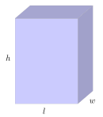
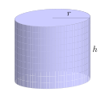
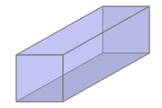
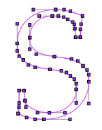
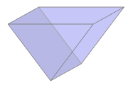

Why do polynomials arise naturally in the study of problems involving the volume and surface area of three-dimensional containers such as boxes and cylinders?
How can polynomial functions be used to approximate non-polynomial curves and functions?
Polynomial functions are the simplest of all functions in mathematics in part because they only involve multiplication and addition. In any applied setting where we can formulate key ideas using only those arithmetic operations, it’s natural that polynomial functions model the corresponding phenomena. For example, in Activity 1.2.2, we saw that for a spherical tank of radius \(4\) m filling with water, the volume of water in the tank at a given instant, \(V\text{,}\) is a function of the depth, \(h\text{,}\) of the water in the tank at the same moment according to the formula
\begin{equation*}
V = f(h) = \frac{\pi}{3} h^2(12-h)\text{.}
\end{equation*}
The function \(f\) is a polynomial of degree \(3\) with a repeated zero at \(h = 0\) and an additional zero at \(h = 12\text{.}\) Because the tank has a radius of \(4\text{,}\) its total height is \(8\text{,}\) and thus the model \(V = f(h) = \frac{\pi}{3} h^2(12-h)\) is only valid on the domain \(0 \le h \le 8\text{.}\) This polynomial function tells us how the volume of water in the tank changes as \(h\) changes.
In other similar situations where we consider the volume of a box, tank, or other three-dimensional container, polynomial functions frequently arise. To develop a model function that represents a physical situation, we almost always begin by drawing one or more diagrams of the situation and then introduce one or more variables to represent quantities that are changing. From there, we explore relationships that are present and work to express one of the quantities in terms of the other(s).
Preview Activity5.3.1.
A piece of cardboard that is \(12 \times 18\) (each measured in inches) is being made into a box without a top. To do so, squares are cut from each corner of the cardboard and the remaining sides are folded up.
Let \(x\) be the side length of the squares being cut from the corners of the cardboard. Draw a labeled diagram that shows the given information and the variable being used.
Determine a formula for the function \(V\) whose output is the volume of the box that results from a square of size \(x \times x\) being cut from each corner of the cardboard.
What familiar kind of function is \(V\text{?}\)
If we start with a small positive value for \(x\) and let that value get larger and larger, what is the first value of \(x\)we encounter that makes it impossible to remove \(x \times x\) squares from the cardboard and still form a box?
What are the zeros of \(V\text{?}\) What is the domain of the model \(V\) in the context of the rectangular box?
Subsection5.3.1Volume, surface area, and constraints
In Preview Activity 5.3.1, we worked with a rectangular box being built by folding cardboard. One of the key principles we needed to use was the fact that the volume of a rectangular box of length \(l\text{,}\) width \(w\text{,}\) and height \(h\) is
\begin{equation}
V = lwh\text{.}\tag{5.3.1}
\end{equation}
Figure5.3.1.A rectangular box.
Figure5.3.2.A circular cylinder.
One way to remember the formula for the volume of a rectangular box is “area of the base times the height”. This principle extends to other three-dimensional shapes that have constant cross-sectional area. For instance, the volume of a circular cylinder with radius \(r\) and height \(h\) is
\begin{equation}
V = \pi r^2 h\tag{5.3.2}
\end{equation}
since the area of the base is \(\pi r^2\text{.}\)
We’ll also often consider the surface area of a three-dimensional container. For a rectangular box with side lengths of \(l\text{,}\)\(w\text{,}\) and \(h\text{,}\) its surface area consists of \(3\) pairs of rectangles: the top and bottom, each of area \(lw\text{,}\) the two sides that are the front and back when we look right at the box, each of area \(lh\text{,}\) and the remaining two sides of area \(wh\text{.}\) Thus the total surface area of the box is
\begin{equation}
SA = 2lw + 2lh + 2wh\text{.}\tag{5.3.3}
\end{equation}
For a circular cylinder, its surface area is the sum of the areas of the top and bottom (\(\pi r^2\) each), plus the area of the “sides”. If we think of cutting the cylinder vertically and unfurling it, the resulting figure is a rectangle whose dimensions are the height of the cylinder, \(h\text{,}\) by the circumference of the base, \(2\pi r\text{.}\) The rectangle’s area is therefore \(2\pi r \cdot h\text{,}\) and hence the total surface area of a cylinder is
\begin{equation}
SA = 2\pi r^2 + 2\pi r h\text{.}\tag{5.3.4}
\end{equation}
Each of the volume and surface area equations (Equation (5.3.1), Equation (5.3.2), Equation (5.3.3), and Equation (5.3.4)) involve only multiplication and addition, and thus have the potential to result in polynomial functions. At present, however, each of these equations involves at least two variables. The inclusion of additional constraints can enable us to use these formulas to generate polynomial functions of a single variable.
Activity5.3.2.
According to a shipping company’s regulations, the girth plus the length of a parcel they transport for their lowest rate may not exceed \(120\) inches, where by girth we mean the perimeter of one end.

Figure5.3.3.A rectangular parcel with a square end.
Suppose that we want to ship a parcel that has a square end of width \(x\) and an overall length of \(y\text{,}\) both measured in inches.
Label the provided picture, using \(x\) for the length of each side of the square end, and \(y\) for the other edge of the package.
How does the length plus girth of \(120\) inches result in an equation (often called a constraint equation) that relates \(x\) and \(y\text{?}\) Explain, and state the equation.
Solve the equation you found in (b) for one of the variables present.
Hence determine the volume, \(V\text{,}\) of the package as a function of a single variable.
What is the domain of the function \(V\) in the context of the physical setting of this problem? (Hint: neither \(x\) nor \(y\) can equal \(0\text{.}\))
Activity5.3.3.
Suppose that we want to construct a cylindrical can using \(60\) square inches of material for the surface of the can. In this context, how does the can’s volume depend on the radius we choose?
Let the cylindrical can have base radius \(r\) and height \(h\text{.}\)
Use the formula for the surface area of a cylinder and the given constraint that the can’s surface area is \(60\) square inches to write an equation that connects the radius \(r\) and height \(h\text{.}\)
Solve the equation you found in (a) for \(h\) in terms of \(r\text{.}\)
Recall that the volume of a cylinder is \(V = \pi r^2 h\text{.}\) Use your work in (b) to write \(V\) as a function of the single variable \(r\text{;}\) simplify the formula as much as possible.
What is the domain of the function \(V\) in the context of the physical setting of this problem? (Hint: how does the constraint on surface area provide an upper bound for the value of \(r\text{?}\) Think about the maximum area that can be allocated to the top and bottom of the can.)
Subsection5.3.2Other applications of polynomial functions
A different use of polynomial functions arises with Bezier curves. The most common type of Bezier curve used in applications is the cubic Bezier curve, which is a curve given parametrically by a formula of the form \((x(t), y(t))\text{,}\) where
The curve passes through the points \(A = (x_0,y_0)\) and \(B = (x_3, y_3)\) and the points \(C = (x_1, y_1)\) and \(D = (x_2, y_2)\) are called control points. At http://gvsu.edu/s/0zC 1
gvsu.edu/s/0zC
, you can explore the effects of moving the control points (in gray) and the points on the curve (in black) to generate different curves in the plane, similar to the one shown in Figure 5.3.4.
Figure5.3.4.A cubic Bezier curve with control points in gray.
Figure5.3.5.The letter S in Palatino font, generated by Bezier curves.
The main issue to realize is that the form of the curve depends on a special family of cubic polynomials:
These four cubic polynomials play a key role in graphic design and are used in all sorts of important ways, including in font design, as seen in Figure 5.3.5.
Another important application of polynomial functions is found in how they can be used to approximate the sine and cosine functions.
Activity5.3.4.
We understand the theoretical rule behind the function \(f(t) = \sin(t)\text{:}\) given an angle \(t\) in radians, \(\sin(t)\) measures the value of the \(y\)-coordinate of the corresponding point on the unit circle. For special values of \(t\text{,}\) we have determined the exact value of \(\sin(t)\text{.}\) For example, \(\sin(\frac{\pi}{3}) = \frac{\sqrt{3}}{2}\text{.}\) But note that we don’t have a formula for \(\sin(t)\text{.}\) Instead, we use a button on our calculator or command on our computer to find values like “\(\sin(1.35)\text{.}\)” It turns out that a combination of calculus and polynomial functions explains how computers determine values of the sine function.
, you’ll find a Desmos worksheet that has the sine function already defined, along with a sequence of polynomials labeled \(T_1(x)\text{,}\)\(T_3(x)\text{,}\)\(T_5(x)\text{,}\)\(T_7(x)\text{,}\)\(\ldots\text{.}\) You can see these functions’ graphs by clicking on their respective icons.
For what values of \(x\) does it appear that \(\sin(x) \approx T_1(x)\text{?}\)
For what values of \(x\) does it appear that \(\sin(x) \approx T_3(x)\text{?}\)
For what values of \(x\) does it appear that \(\sin(x) \approx T_5(x)\text{?}\)
What overall trend do you observe? How good is the approximation generated by \(T_{19}(x)\text{?}\)
In a new Desmos worksheet, plot the function \(y = \cos(x)\) along with the following functions: \(P_2(x) = 1 - \frac{x^2}{2!}\) and \(P_4(x) = 1 - \frac{x^2}{2!} + \frac{x^4}{4!}\text{.}\) Based on the patterns with the coefficients in the polynomials approximating \(\sin(x)\) and the polynomials \(P_2\) and \(P_4\) here, conjecture formulas for \(P_6\text{,}\)\(P_8\text{,}\) and \(P_{18}\) and plot them. How well can we approximate \(y = \cos(x)\) using polynomials?
Subsection5.3.3Summary
Polynomials arise naturally in the study of problems involving the volume and surface area of three-dimensional containers such as boxes and cylinders because these formulas fundamentally involve sums and products of variables. For instance, the volume of a cylinder is \(V = \pi r^2 h\text{.}\) In the presence of a surface area constraint that tells us that \(h = \frac{100-2\pi r^2}{2\pi r}\text{,}\) it follows that
Polynomial functions can be used to approximate non-polynomial curves and functions in many different ways. One example is found in cubic Bezier curves which use a collection of control points to enable the user to manipulate curves to pass through select points in such a way that the curve first travels in a certain direction. Another example is in the remarkable approximation of non-polynomial functions like the sine function, as given by
where the approximation is good for \(x\)-values near \(x = 0\text{.}\)
Exercises5.3.4Exercises
1.
You wish to pack a cardboard box inside a wooden crate. In order to have room for the packing materials, you need to leave a \(0.5 \ \mbox{ft}\) space around the front, back, and sides of the box, and a \(1 \ \mbox{ft}\) space around the top and bottom of the box.
If the cardboard box is \(x\) feet long, \((x+2)\) feet wide, and \((x-1)\) feet deep, find a formula in terms of \(x\) for the amount of packing material, \(M\text{,}\) needed.
\(M(x) =\)
2.
An open-top box is to be constructed from a \(6 \ \mbox{in}\) by \(14 \ \mbox{in}\) rectangular sheet of tin by cutting out squares of equal size at each corner, then folding up the resulting flaps. Let \(x\) denote the length of the side of each cut-out square. Assume negligible thickness.
(a) Find a formula for the volume, \(V\text{,}\) of the box as a function of \(x\text{.}\)\(\ \ V(x) =\)
(b) For what values of \(x\) does the formula from part (a) make sense in the context of the problem?
(c) On a separate piece of paper, sketch a graph of the volume function.
(d) What, approximately, is the maximum volume of the box?
(include units: )
3.
An open triangular trough, as pictured in Figure 5.3.6 is being constructed from aluminum. The trough is to have equilateral triangular ends of side length \(s\) and a length of \(l\text{.}\) We want the trough to used a fixed \(100\) square feet of aluminum.

Figure5.3.6.A triangular trough.
What is the area of one of the equilateral triangle ends as a function of \(s\text{?}\)
Recall that for an object with constant cross-sectional area, its volume is the area of one of those cross-sections times its height (or length). Hence determine a formula for the volume of the trough that depends on \(s\) and \(l\text{.}\)
Find a formula involving \(s\) and \(l\) for the surface area of the trough.
Use the constraint that we have \(100\) square feet of available aluminum to generate an equation that connects \(s\) and \(l\) and hence solve for \(l\) in terms of \(s\text{.}\)
Use your work in (d) and (b) to express the volume of the trough, \(V\text{,}\) as a function of \(s\) only.
What is the domain of the function \(V\) in the context of the situation being modeled? Why?
4.
A rectangular box is being constructed so that its base is twice as long as it is wide. In addition, the base and top of the box cost $\(2\) per square foot while the sides cost $\(1.50\) per square foot. If we only want to spend $\(10\) on materials for the box, how can we write the box’s volume as a function of a single variable? What is the domain of this volume function? (Hint: first find the box’s surface area in terms of two variables, and then find an expression for the cost of the box in terms of those same variables. Use the fact that cost is constrained to solve for one variable in terms of another.)
5.
Suppose that we want a cylindrical barrel to hold \(8\) cubic feet of volume. Let the barrel have radius \(r\) and height \(h\text{,}\) each measured in feet. How can we write the surface area, \(A\text{,}\) of the barrel solely as a function of \(r\text{?}\)
Draw several possible pictures of how the barrel might look. For instance, what if the radius is very small? How will the height appear in comparison? Likewise, what happens if the height is very small?
Use the fact that volume is fixed at \(8\) cubic feet to state a constraint equation and solve that equation for \(h\) in terms of \(r\text{.}\)
Recall that the surface area of a cylinder is \(A = 2\pi r^2 + 2\pi rh\text{.}\) Use your work in (c) to write \(A\) as a function of only \(r\text{.}\)
What is the domain of \(A\text{?}\) Why?
Explain why \(A\) is not a polynomial function of \(r\text{.}\)